Es una biblioteca de validación de esquemas para TypeScript y JavaScript. Permite definir esquemas de datos y validarlos fácilmente, asegurando que los datos recibidos en una aplicación cumplan con ciertas reglas y estructuras.
Para utilizar zod necesitamos instalarlo con el comando:
npm zod -E
¿Qué es un schema?
Un esquema en Zod es un conjunto de instrucciones declarativas que define las restricciones y las propiedades de los datos que deben ser cumplidas para satisfacer las necesidades de una aplicación. Estas instrucciones consisten en una combinación de tipos de datos, reglas de validación y operaciones de transformación que se aplican a las entradas de datos. El esquema actúa como un contrato entre los productores y consumidores de datos, garantizando que los datos cumplen con ciertas expectativas antes de ser procesados o almacenados. Además, los esquemas en Zod pueden ser compuestos y reutilizados, lo que permite una modularidad y extensibilidad en el diseño de aplicaciones, facilitando la validación y el manejo de datos en entornos complejos.
Sintáxis para declarar un schema
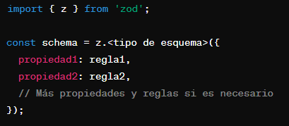
z.({ ... }): Aquí especificamos el tipo de esquema que estamos creando. Podemos usar diferentes tipos de esquemas dependiendo de nuestras necesidades, como object para objetos, string para cadenas de texto, number para números, etc.
{ propiedad1: regla1, propiedad2: regla2, ... }: Esto define las propiedades del esquema y las reglas de validación asociadas a cada propiedad. Podemos incluir todas las propiedades y reglas que necesitemos para validar nuestros datos.
Ejemplo con un esquema para un objeto que representa un usuario
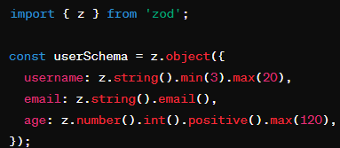
Por lo tanto, el esquema userSchema ahora especifica las siguientes reglas de validación:
username: El nombre de usuario debe tener al menos 3 caracteres y como máximo 20 caracteres.
email: El correo electrónico debe tener un formato válido.
age: La edad debe ser un número entero positivo y como máximo 120 años.
Una vez que ya definimos las restricciones del esquema lo que queda es validar la información que recibimos del request.body para que verifique los datos del cliente con el schema.
Cuando nosotros creamos un esquema tiene varios métodos disponibles, como parse (síncrono), safeParse, parseAsync (asíncrono), entre otros. Estos métodos son proporcionados por Zod y se utilizan para validar los datos según las reglas definidas en el esquema.
Veamos la descripción de los métodos disponibles en los schemas de Zod.
parse: Este método generalmente se utiliza para analizar los datos enviados en una solicitud HTTP, como el cuerpo de una solicitud POST. Convierte los datos en un objeto JavaScript utilizable.
parseAsync: Una versión asincrónica de parse, útil cuando se trabaja con datos que pueden tardar en estar disponibles. No bloquea el hilo principal mientras espera que se complete la operación de análisis.
safeParse: Similar a parse, pero se enfoca en asegurar que los datos analizados sean seguros y válidos antes de convertirlos en un objeto. Esto puede incluir validación de datos para evitar ataques de inyección de código u otros problemas de seguridad.
Si tiene éxito, devuelve un objeto con dos partes:
success, que indica si el análisis fue exitoso.
data, que contiene el valor analizado si el análisis fue exitoso.
Si el análisis falla, devuelve un objeto con:
success establecido en false.
error, que contiene información sobre el error encontrado durante la validación.
safeParseAsync: Similar a safeParse, este método es una versión asincrónica que se enfoca en garantizar que los datos analizados sean seguros y válidos antes de convertirlos en un objeto. Al ser asincrónico, no bloquea el hilo principal mientras realiza la operación de análisis. Esto es útil cuando se trabaja con datos que pueden tardar en estar disponibles y se desea validarlos de manera segura antes de procesarlos más a fondo.
serialize: Contrario a parse, este método convierte un objeto JavaScript en una cadena de texto, generalmente para enviarla como respuesta a una solicitud HTTP. Por ejemplo, podría serializar un objeto en formato JSON para enviarlo al cliente.
deserialize: Inverso a serialize, convierte una cadena de texto en un objeto JavaScript. Esto puede ser útil al recibir datos de una solicitud HTTP y convertirlos en un objeto utilizable en el servidor.
validate: Este método se utiliza para verificar si los datos cumplen con ciertos criterios o restricciones definidas en un esquema o en las reglas de validación de la aplicación. Es útil para garantizar la integridad y la seguridad de los datos antes de procesarlos más a fondo.
sanitize: A menudo utilizado en aplicaciones donde la seguridad es una preocupación, este método elimina cualquier contenido malicioso o no deseado de los datos, como scripts incrustados o caracteres especiales que podrían ser utilizados en ataques XSS (Cross-Site Scripting).
Veamos como quedaria comple la validación en el siguiente ejemplo.
Validación de usuario completo
La forma de estructurar los datos es decir, el schema, la validación se pueden ordenar de diferentes maneras y esta es una, declarando el schema fuera de un endpoint para que sea reutilizable, pero hay otras formas que estructurar los datos y lo veremos en otro ejemplo.
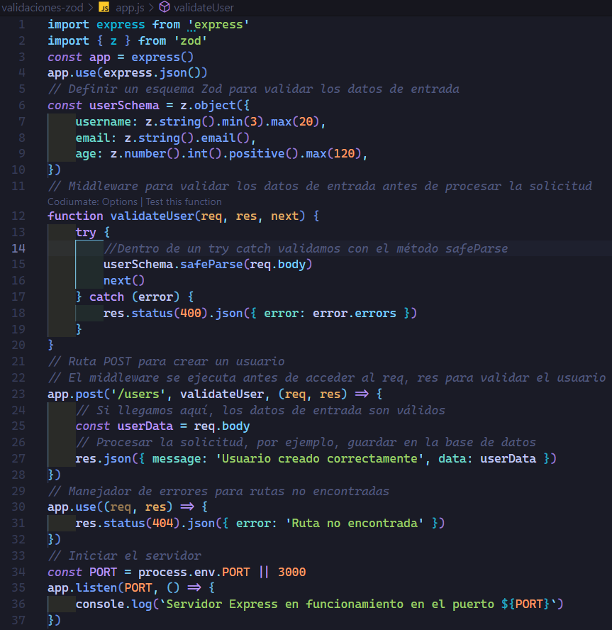
Schema práctico
Ahora veamos un ejemplo prático simulando una base de datos de péliculas en un archivo.json
Pero primero veamos la estructura de nuestro proyecto
Estructura del proyecto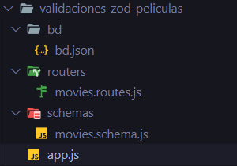
Archivo JSON Películas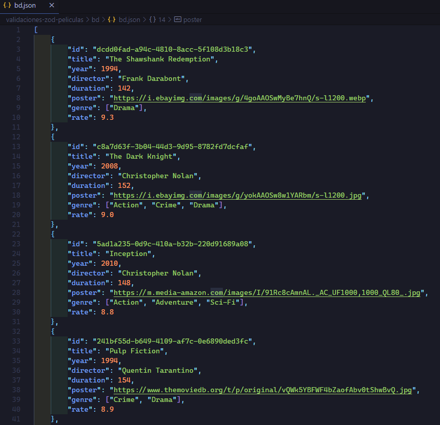
Archivo movies.schemas.js parte 1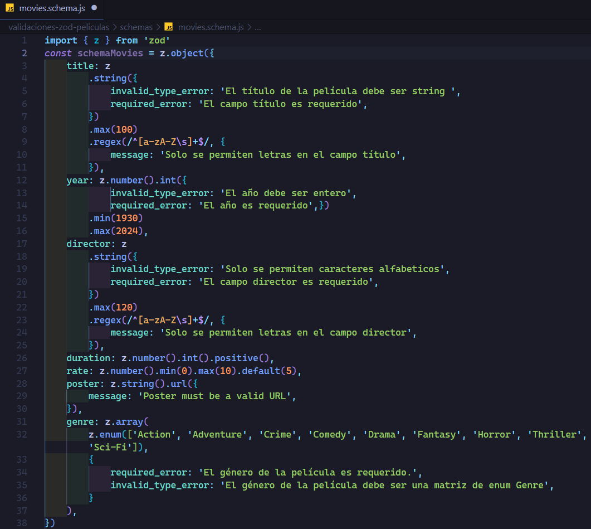
Archivo movies.schemas.js parte 2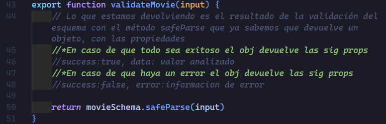
Archivo movies.routes.js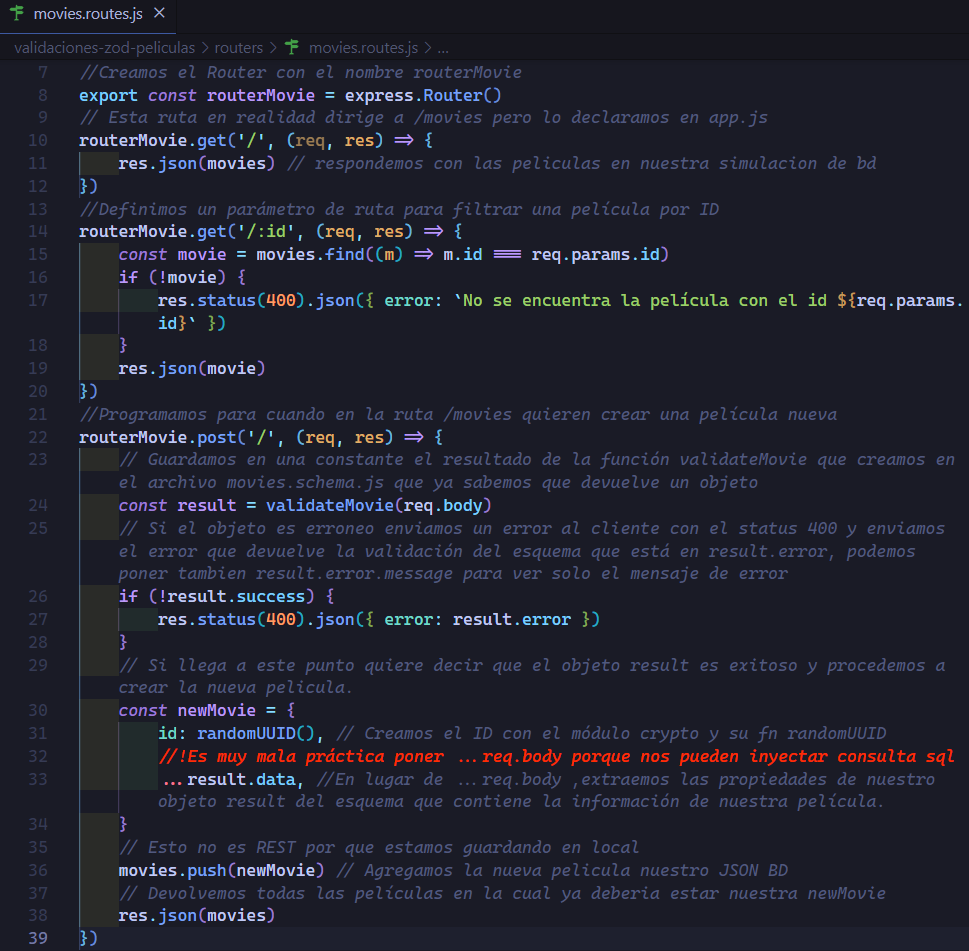
Archivo app.js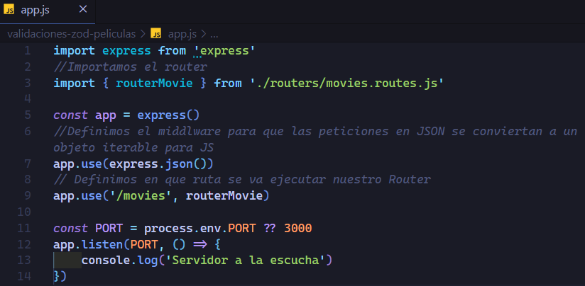
Ahora solo queda poner a prueba nuestra app.
Resultados
Resultado de ruta a /movies, que devuelve todas las películas de nuestra BD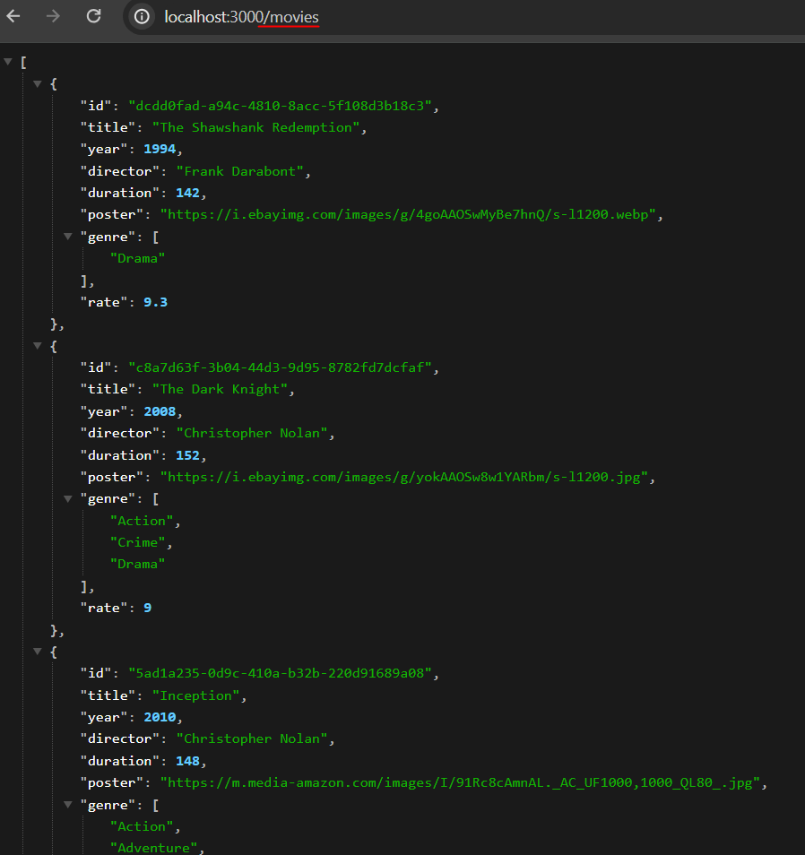
Resultado del filtrado de una pelicula en este ejemplo filtramos por el id c8a7d63f-3b04-44d3-9d95-8782fd7dcfaf que pertence a la película The Dark Knight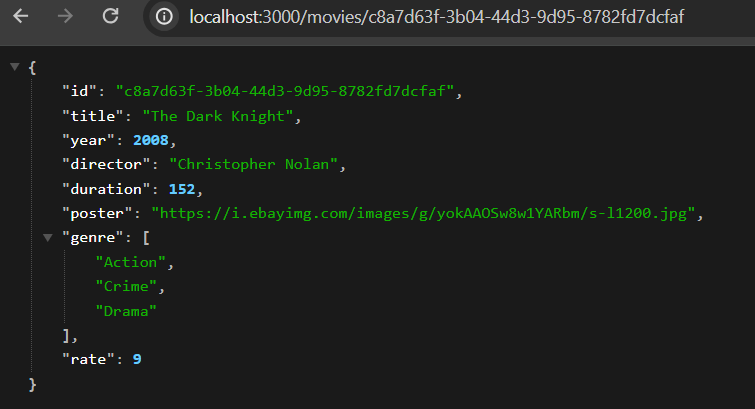
Creamos la petición POST para crear una nueva película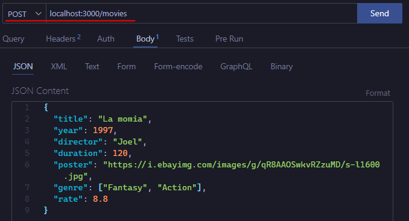
Ahora podemos ver que nuestra película ya se encuentra incluida con las demás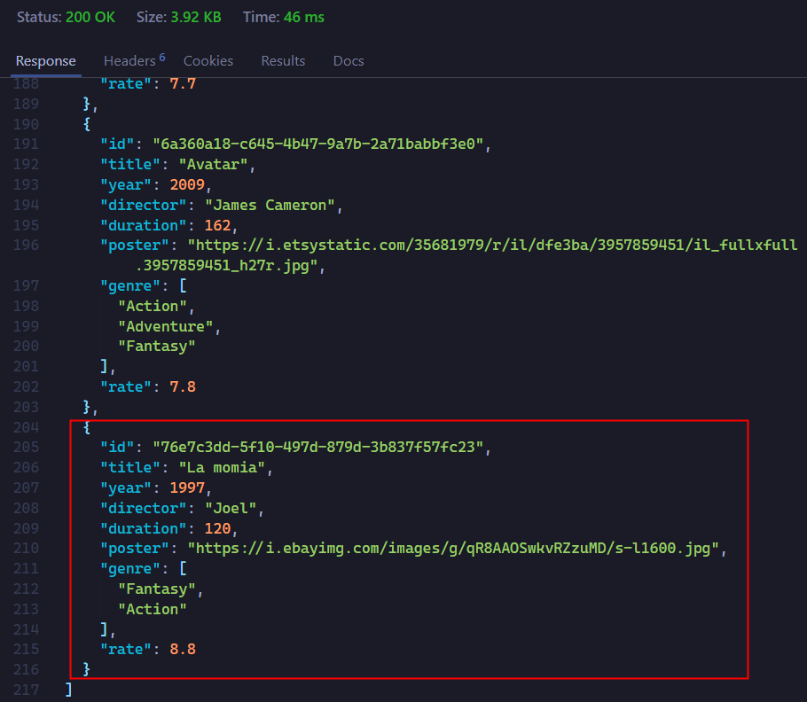
Si enviamos la información de la película con datos incorrectos como el nombre, veremos el siguiente error que devuelve la validacion del esquema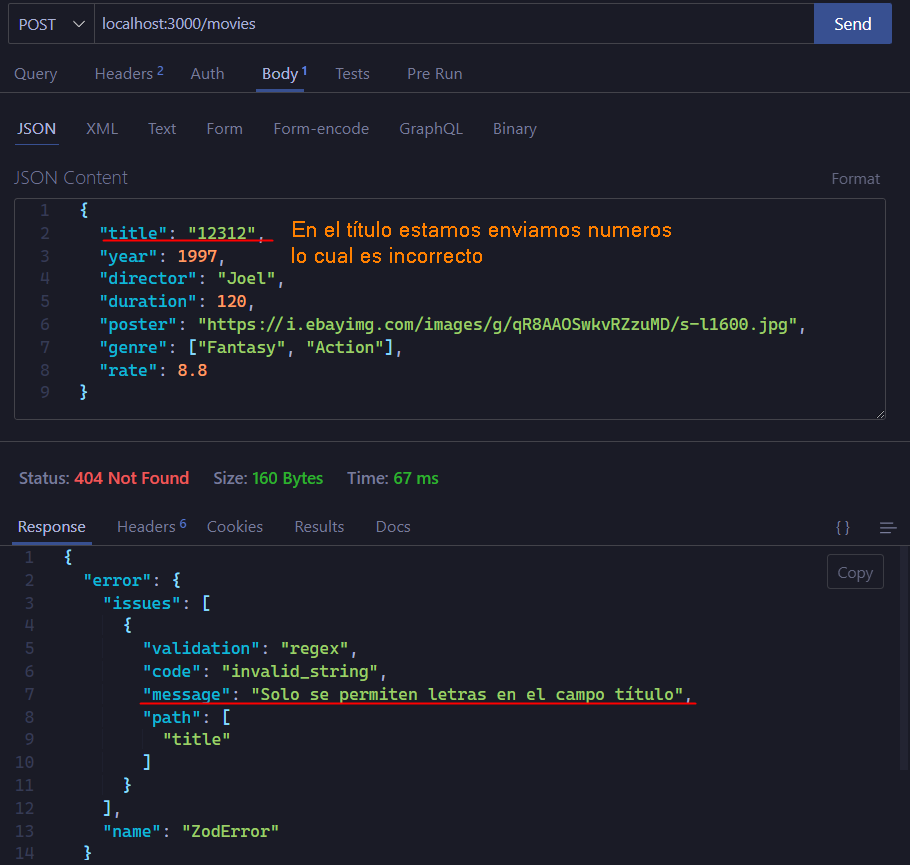